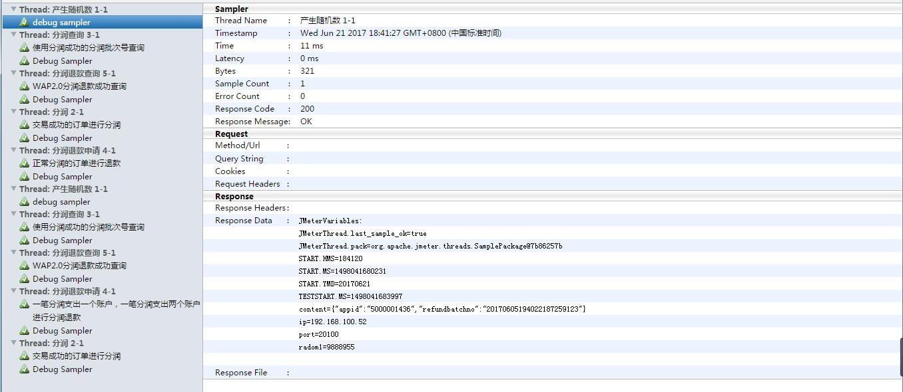

ant+jmeter+jenkins+git持续集成以及邮件报告展示
标签：cond 选择 oca jpg should dshow any com ice
前序准备工作：
- ant--下载地址：http://ant.apache.org/bindownload.cgi
- jmeter--下载地址：http://jmeter.apache.org/download_jmeter.cgi
- jenkins--下载地址：https://jenkins.io/
- git--下载地址：https://git-scm.com/downloads
- jdk--http://www.oracle.com/technetwork/java/javase/downloads/index.html
安装工具：
常用的软件安装，环境变量配置，略……不会的可以百度
ant配置：
- 将jmeter安装目录下\apache-jmeter-3.2\extras的ant-jmeter-1.1.1.jar复制到ant安装目录下apache-ant-1.10.1\lib
- 新建build.xml文件，按照下面的模版进行适当的修改。
<?xml version="1.0" encoding="UTF-8"?> <project name="ant-jmeter-test" default="run" basedir="."> <tstamp> <format property="time" pattern="yyyyMMddhhmm" /> </tstamp> <property environment="env"/> <property name="ReportName" value="TestReport" /> <!-- 需要改成自己本地的 Jmeter 目录--> <property name="jmeter.home" value="D:\work\soft\apache-jmeter-3.2" /> <!-- jmeter生成jtl、html格式的结果报告的路径--> <property name="jmeter.result.dir" value="${env.WORKSPACE}/results/${env.BUILD_ID}" /> <!-- 生成的报告的前缀--> <property name="jmeter.result.jtlName" value="${jmeter.result.dir}/${ReportName}.jtl" /> <property name="jmeter.result.htmlName" value="${jmeter.result.dir}/${ReportName}.html" /> <!-- GIT拉取到本地目录路径 --> <property name="githome" value="${env.WORKSPACE}/autoscript/汇总/" /> <target name="run"> <echo message="start..."/> <antcall target="clean" /> <antcall target="test" /> <antcall target="report" /> </target> <target name="clean"> <mkdir dir="${env.WORKSPACE}/results/${env.BUILD_ID}" /> </target> <target name="test"> <taskdef name="jmeter" classname="org.programmerplanet.ant.taskdefs.jmeter.JMeterTask" /> <jmeter jmeterhome="${jmeter.home}" resultlog="${jmeter.result.jtlName}"> <!-- 声明要运行的脚本"*.jmx"指包含此目录下的所有jmeter脚本--> <testplans dir="${githome}\坐席基本功能" includes="坐席基本功能汇总.jmx" /> <property name="jmeter.save.saveservice.output_format" value="xml"/> </jmeter> </target> <path id="xslt.classpath"> <fileset dir="${jmeter.home}/lib" includes="xalan*.jar"/> <fileset dir="${jmeter.home}/lib" includes="serializer*.jar"/> </path> <target name="report"> <tstamp> <format property="report.datestamp" pattern="yyyy/MM/dd HH:mm" /></tstamp> <xslt classpathref="xslt.classpath" force="true" in="${jmeter.result.jtlName}" out="${jmeter.result.htmlName}" style="${jmeter.home}/extras/jmeter.results.shanhe.me.xsl"> <param name="dateReport" expression="${report.datestamp}"/> </xslt> <!-- 因为上面生成报告的时候，不会将相关的图片也一起拷贝至目标目录，所以，需要手动拷贝 --> <copy todir="${jmeter.result.dir}"> <fileset dir="${jmeter.home}/extras"> <include name="collapse.png" /> <include name="expand.png" /> </fileset> </copy> </target> </project>
3.cmd进入build.xml文件目录，使用ant命令测试是否生效
jmeter配置：
打开jmeter安装目录apache-jmeter-3.2\bin中的jmeter.properties，把jmeter.save.saveservice.output_format=csv 值修改为xml，即： jmeter.save.saveservice.output_format=xml
git配置：
由于我本机装了sourcetree和git，私钥已经生成过，所以不知道是否有影响，可以先跳过，如果后续的jenkins无法集成git，可以参考这篇文章，后续我也会更新在新环境下的配置流程http://www.cnblogs.com/xuange306/p/6403907.html
jenkins配置：
- 打开jenkins，进入插件管理，安装插件：Performance Plugin、HTML Publisher plugin、Email Extension Plugin、Ant Plugin……附上我的插件安装列表
2.进入系统管理的Global Tool Configuration，配置ant、jdk、git的安装路径
3.进入系统管理的系统设置，进行全局的配置。注意：系统管理员邮件地址一定要跟邮件配置的发件人地址一致
4. 回到jenkins主页，新建一个job，选择自由风格
- 源码管理
- 选择git，Repository URL输入git地址：http://192.168.***.10/**r/**ter.git
- Credentials点击ADD，增加自己的git帐号。如：
- Credentials选择上步增加的帐号
- Branch Specifier (blank for ‘any‘)输入自己项目的分支，我的项目在master下，就输入*/master
- 构建触发器
- 选择Build periodically。输入30 22 * * * --代表每天的22：30执行
- 构建
- 增加构建步骤--Invoke ant：Ant Version选择上面步骤配置ant的变量名称ANT HOME；Targets输入run；Build File输入上述步骤的ant build.xml的文件路径：D:\work\antxml\build-通信平台.xml
- 增加构建步骤--Execute Windows batch command：输入
echo %WORKSPACE% echo %BUILD_ID% cd results cd %BUILD_ID%
- 构建后操作
- 增加Publish HTML reports：HTML directory to archive输入results\$BUILD_ID；Index page[s]输入TestReport.html；Report title输入HTML Report
- 增加Publish Performance test result report：性能监控的，可以先忽略配置
- 增加Editable Email Notification：基本配置介绍了，我之前的jenins文章有过介绍，额外增加一个附件的配置：Attachments输入results\$BUILD_ID\TestReport.html
附上我的配置图：
到此为止，jenkins的基本配置就算完成，保存后，点击立即构建，查看效果：
可以看到有NAN的出现，下面我们开始对jenkins的报告进行优化。。。
首先解决调NAN的问题
1. 打开jmeter安装目录apache-jmeter-3.2\extras的build.xml，修改为如下：
<?xml version="1.0"?> <!-- Licensed to the Apache Software Foundation (ASF) under one or more contributor license agreements. See the NOTICE file distributed with this work for additional information regarding copyright ownership. The ASF licenses this file to You under the Apache License, Version 2.0 (the "License"); you may not use this file except in compliance with the License. You may obtain a copy of the License at http://www.apache.org/licenses/LICENSE-2.0 Unless required by applicable law or agreed to in writing, software distributed under the License is distributed on an "AS IS" BASIS, WITHOUT WARRANTIES OR CONDITIONS OF ANY KIND, either express or implied. See the License for the specific language governing permissions and limitations under the License. --> <project name="ant-jmeter" default="all"> <description> Sample build file for use with ant-jmeter.jar See http://www.programmerplanet.org/pages/projects/jmeter-ant-task.php To run a test and create the output report: ant -Dtest=script To run a test only: ant -Dtest=script run To run report on existing test output ant -Dtest=script report The "script" parameter is the name of the script without the .jmx suffix. Additional options: -Dshow-data=y - include response data in Failure Details -Dtestpath=xyz - path to test file(s) (default user.dir). N.B. Ant interprets relative paths against the build file -Djmeter.home=.. - path to JMeter home directory (defaults to parent of this build file) -Dreport.title="My Report" - title for html report (default is ‘Load Test Results‘) </description> <property name="testpath" value="${user.dir}"/> <property name="jmeter.home" value="${basedir}/.."/> <property name="report.title" value="**接口自动化测试报告"/> <!-- Name of test (without .jmx) --> <property name="test" value="Test"/> <!-- Should report include response data for failures? --> <property name="show-data" value="n"/> <property name="format" value="2.1"/> <condition property="style_version" value="_21"> <equals arg1="${format}" arg2="2.1"/> </condition> <condition property="funcMode"> <equals arg1="${show-data}" arg2="y"/> </condition> <condition property="funcMode" value="false"> <not> <equals arg1="${show-data}" arg2="y"/> </not> </condition> <!-- Allow jar to be picked up locally --> <path id="jmeter.classpath"> <fileset dir="${basedir}"> <include name="ant-jmeter*.jar"/> </fileset> </path> <taskdef name="jmeter" classpathref="jmeter.classpath" classname="org.programmerplanet.ant.taskdefs.jmeter.JMeterTask"/> <target name="all" depends="run,report"/> <target name="run"> <echo>funcMode = ${funcMode}</echo> <delete file="${testpath}/${test}.html"/> <jmeter jmeterhome="${jmeter.home}" testplan ="${testpath}/${test}.jmx" resultlog="${testpath}/${test}.jtl"> <!-- <jvmarg value="-Xincgc"/> <jvmarg value="-Xmx128m"/> <jvmarg value="-Dproperty=value"/> <jmeterarg value="-qextra.properties"/> --> <!-- Force suitable defaults --> <property name="jmeter.save.saveservice.output_format" value="xml"/> <property name="jmeter.save.saveservice.assertion_results" value="all"/> <property name="jmeter.save.saveservice.bytes" value="true"/> <property name="file_format.testlog" value="${format}"/> <property name="jmeter.save.saveservice.response_data.on_error" value="${funcMode}"/> </jmeter> </target> <property name="lib.dir" value="${jmeter.home}/lib"/> <!-- Use xalan copy from JMeter lib directory to ensure consistent processing with Java 1.4+ --> <path id="xslt.classpath"> <fileset dir="${lib.dir}" includes="xalan*.jar"/> <fileset dir="${lib.dir}" includes="serializer*.jar"/> </path> <target name="report" depends="xslt-report,copy-images"> <echo>Report generated at ${report.datestamp}</echo> </target> <target name="xslt-report" depends="_message_xalan"> <tstamp><format property="report.datestamp" pattern="yyyy/MM/dd HH:mm"/></tstamp> <xslt classpathref="xslt.classpath" force="true" in="${testpath}/${test}.jtl" out="${testpath}/${test}.html" style="${jmeter.home}/extras/jmeter-results-detail-report_21.xsl"> <param name="showData" expression="${show-data}"/> <param name="titleReport" expression="${report.title}"/> <param name="dateReport" expression="${report.datestamp}"/> </xslt> </target> <!--style="${basedir}/jmeter-results-detail-report${style_version}.xsl">--> <!-- Copy report images if needed --> <target name="copy-images" depends="verify-images" unless="samepath"> <copy file="${basedir}/expand.png" tofile="${testpath}/expand.png"/> <copy file="${basedir}/collapse.png" tofile="${testpath}/collapse.png"/> </target> <target name="verify-images"> <condition property="samepath"> <equals arg1="${testpath}" arg2="${basedir}" /> </condition> </target> <!-- Check that the xalan libraries are present --> <condition property="xalan.present"> <and> <!-- No need to check all jars; just check a few --> <available classpathref="xslt.classpath" classname="org.apache.xalan.processor.TransformerFactoryImpl"/> <available classpathref="xslt.classpath" classname="org.apache.xml.serializer.ExtendedContentHandler"/> </and> </condition> <target name="_message_xalan" unless="xalan.present"> <echo>Cannot find all xalan and/or serialiser jars</echo> <echo>The XSLT formatting may not work correctly.</echo> <echo>Check you have xalan and serializer jars in ${lib.dir}</echo> </target> </project>
2. 运行后的效果图如下：
3. 显示没问题了，但是又碰到另一问题，这样的报告会把同一个接口自动归类的一个标签下面，如下图，正常签入下面有好多个签入接口，没有按照我脚本中的分组去显示
接着优化
1. 在网上找到一个模版，下载地址：http://shanhe.me/2011/06/07/new-xsl-stylesheet-for-jmeter-command-line-results-report
2. 将下载好的模版存放在jmeter安装目录apache-jmeter-3.2\extras中。
3. 再次打开jmeter安装目录apache-jmeter-3.2\extras的build.xml，将<!--style="${basedir}/jmeter-results-detail-report${style_version}.xsl">-->替换为下载的模版文件style="${basedir}/jmeter.results.shanhe.me.xsl">
<?xml version="1.0"?> <!-- Licensed to the Apache Software Foundation (ASF) under one or more contributor license agreements. See the NOTICE file distributed with this work for additional information regarding copyright ownership. The ASF licenses this file to You under the Apache License, Version 2.0 (the "License"); you may not use this file except in compliance with the License. You may obtain a copy of the License at http://www.apache.org/licenses/LICENSE-2.0 Unless required by applicable law or agreed to in writing, software distributed under the License is distributed on an "AS IS" BASIS, WITHOUT WARRANTIES OR CONDITIONS OF ANY KIND, either express or implied. See the License for the specific language governing permissions and limitations under the License. --> <project name="ant-jmeter" default="all"> <description> Sample build file for use with ant-jmeter.jar See http://www.programmerplanet.org/pages/projects/jmeter-ant-task.php To run a test and create the output report: ant -Dtest=script To run a test only: ant -Dtest=script run To run report on existing test output ant -Dtest=script report The "script" parameter is the name of the script without the .jmx suffix. Additional options: -Dshow-data=y - include response data in Failure Details -Dtestpath=xyz - path to test file(s) (default user.dir). N.B. Ant interprets relative paths against the build file -Djmeter.home=.. - path to JMeter home directory (defaults to parent of this build file) -Dreport.title="My Report" - title for html report (default is ‘Load Test Results‘) </description> <property name="testpath" value="${user.dir}"/> <property name="jmeter.home" value="${basedir}/.."/> <property name="report.title" value="**接口自动化测试报告"/> <!-- Name of test (without .jmx) --> <property name="test" value="Test"/> <!-- Should report include response data for failures? --> <property name="show-data" value="n"/> <property name="format" value="2.1"/> <condition property="style_version" value="_21"> <equals arg1="${format}" arg2="2.1"/> </condition> <condition property="funcMode"> <equals arg1="${show-data}" arg2="y"/> </condition> <condition property="funcMode" value="false"> <not> <equals arg1="${show-data}" arg2="y"/> </not> </condition> <!-- Allow jar to be picked up locally --> <path id="jmeter.classpath"> <fileset dir="${basedir}"> <include name="ant-jmeter*.jar"/> </fileset> </path> <taskdef name="jmeter" classpathref="jmeter.classpath" classname="org.programmerplanet.ant.taskdefs.jmeter.JMeterTask"/> <target name="all" depends="run,report"/> <target name="run"> <echo>funcMode = ${funcMode}</echo> <delete file="${testpath}/${test}.html"/> <jmeter jmeterhome="${jmeter.home}" testplan ="${testpath}/${test}.jmx" resultlog="${testpath}/${test}.jtl"> <!-- <jvmarg value="-Xincgc"/> <jvmarg value="-Xmx128m"/> <jvmarg value="-Dproperty=value"/> <jmeterarg value="-qextra.properties"/> --> <!-- Force suitable defaults --> <property name="jmeter.save.saveservice.output_format" value="xml"/> <property name="jmeter.save.saveservice.assertion_results" value="all"/> <property name="jmeter.save.saveservice.bytes" value="true"/> <property name="file_format.testlog" value="${format}"/> <property name="jmeter.save.saveservice.response_data.on_error" value="${funcMode}"/> </jmeter> </target> <property name="lib.dir" value="${jmeter.home}/lib"/> <!-- Use xalan copy from JMeter lib directory to ensure consistent processing with Java 1.4+ --> <path id="xslt.classpath"> <fileset dir="${lib.dir}" includes="xalan*.jar"/> <fileset dir="${lib.dir}" includes="serializer*.jar"/> </path> <target name="report" depends="xslt-report,copy-images"> <echo>Report generated at ${report.datestamp}</echo> </target> <target name="xslt-report" depends="_message_xalan"> <tstamp><format property="report.datestamp" pattern="yyyy/MM/dd HH:mm"/></tstamp> <xslt classpathref="xslt.classpath" force="true" in="${testpath}/${test}.jtl" out="${testpath}/${test}.html" style="${basedir}/jmeter.results.shanhe.me.xsl"> <param name="showData" expression="${show-data}"/> <param name="titleReport" expression="${report.title}"/> <param name="dateReport" expression="${report.datestamp}"/> </xslt> </target> <!--style="${basedir}/jmeter-results-detail-report${style_version}.xsl">--> <!-- Copy report images if needed --> <target name="copy-images" depends="verify-images" unless="samepath"> <copy file="${basedir}/expand.png" tofile="${testpath}/expand.png"/> <copy file="${basedir}/collapse.png" tofile="${testpath}/collapse.png"/> </target> <target name="verify-images"> <condition property="samepath"> <equals arg1="${testpath}" arg2="${basedir}" /> </condition> </target> <!-- Check that the xalan libraries are present --> <condition property="xalan.present"> <and> <!-- No need to check all jars; just check a few --> <available classpathref="xslt.classpath" classname="org.apache.xalan.processor.TransformerFactoryImpl"/> <available classpathref="xslt.classpath" classname="org.apache.xml.serializer.ExtendedContentHandler"/> </and> </condition> <target name="_message_xalan" unless="xalan.present"> <echo>Cannot find all xalan and/or serialiser jars</echo> <echo>The XSLT formatting may not work correctly.</echo> <echo>Check you have xalan and serializer jars in ${lib.dir}</echo> </target> </project>
4. 打开jmeter安装目录apache-jmeter-3.2\bin中的jmeter.properties，增加如下配置
jmeter.save.saveservice.data_type=true
jmeter.save.saveservice.label=true
jmeter.save.saveservice.response_code=true
# response_data is not currently supported for CSV output
jmeter.save.saveservice.response_data=true
# Save ResponseData for failed samples
jmeter.save.saveservice.response_data.on_error=false
jmeter.save.saveservice.response_message=true
jmeter.save.saveservice.successful=true
jmeter.save.saveservice.thread_name=true
jmeter.save.saveservice.time=true
jmeter.save.saveservice.subresults=true
jmeter.save.saveservice.assertions=true
jmeter.save.saveservice.latency=true
jmeter.save.saveservice.connect_time=true
jmeter.save.saveservice.samplerData=true
jmeter.save.saveservice.responseHeaders=true
jmeter.save.saveservice.requestHeaders=true
jmeter.save.saveservice.encoding=false
jmeter.save.saveservice.bytes=true
jmeter.save.saveservice.url=true
jmeter.save.saveservice.filename=true
jmeter.save.saveservice.hostname=true
jmeter.save.saveservice.thread_counts=true
jmeter.save.saveservice.sample_count=true
jmeter.save.saveservice.idle_time=true
5. 进入jenkins，再次构建，查看报告：

到这里，已经初步满足了我这次项目的需求，为了达到效果，我再报告中又增加了一个测试结果概要的描述。如下图：

具体步骤是把jmeter-results-detail-report_21.xsl中的概要复制到jmeter.results.shanhe.me.xsl中，并修改css样式。详细报告可进我的网盘下载：链接: https://pan.baidu.com/s/1jIcb1ci
贴一个最终发邮件的图吧：
附件效果图：
ant+jmeter+jenkins+git持续集成以及邮件报告展示
标签：cond 选择 oca jpg should dshow any com ice
原文地址：http://www.cnblogs.com/qiaoyeye/p/7122356.html
- 爱奇艺、优酷、腾讯视频竞品分析报告2016（一） 2016-04-04
- 网红淘宝店的成与败 2016-12-31
- 【转】console.log 用法 2015-05-05
- 白话空间统计之：Moran's I（莫兰指数） 2015-07-29
- 在深圳有娃的家长必须要懂的社保少儿医保，不然亏大了！（收藏） 2016-11-16
- 前端页面适配的rem换算 2017-05-21
- numpy数据类型dtype转换 2016-01-14
- nginx提示Job for nginx.service failed because the control的问题 2017-06-27
- Echarts-axislabel文字过长导致显示不全或重叠 2015-08-27
- Proxyee - down：百度云文件下载利器 2018-02-03